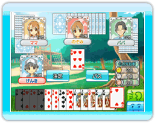

14 |
おきらく大富豪のルール |
 |

大富豪は、配られた手札を場に出して、相手よりも早く自分の手札を無くした人が勝つゲームです。
4、5、6、7、8、9、10、J、Q、K、A、2 の順に強くなっていきます。 ジョーカーは１枚で出す場合には最強となります。（ただし、スペードの3は、ジョーカーに勝つことができます。）
１回のゲームで取れる点数は、 １位が２点、２位が１点、３位と４位が０点になります。
一度にカードを４枚以上同時に出すと「革命」になります。 「革命」を起こすと、カードの強さが逆になります。（２がいちばん弱く、３がいちばん強いカードになります） ●みやこ落ち 前のゲームで１位を取った人が、次のゲームで１位を取れなかったとき、無条件で４位になってしまいます。 ●８切り ８（もしくは８を含む組み合わせ）が出されると場が流れ、８を出した人が親になります。 ●ジョーカー ジョーカーは他のカードの代わりとして使えます。 ●スペ３ ジョーカー１枚に対して、スペードの３で勝つことができます。 この時、場は流れ、スペードの３を出した人が親になります。 ※革命時は「スペ３」は無効になります。 ●しばり 場に出されているカードと同じスート（マーク）が続けて出されると、その後に出せるカードは、そのスートだけになります。この効果は場が流れるまで続きます。 ※Wi-Fi対戦では、「しばり」ルールは使われません。
２枚以上の組み合わせであがるときも、「2」か「８」か「ジョーカー」をいっしょに出すと反則負けになります。 ※革命中でカードの強弱が逆転しているときは「２」ではなく、「３」を出してあがると反則負けになります。 |
 |
 |
 |